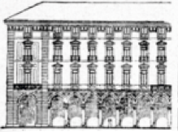
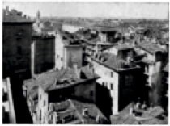
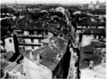

"Via Roma deve essere fatta per ragioni di igiene e di decoro cittadino piuttosto che per ragioni di viabilita."
I caratteri della Nuova Via
- Mantenere ed esaltere il suo carattere rappresentativo di via trionfale.
- Conservare e aumentare il suo carattere commerciale.
- Rappresentare la sintesi della Torino moderna e nello stesso conservare il carattere di intimità per cui è stata fino ad ora la via prediletta del centro cittadino.
- Essere un buon impiego di capitali in modo da garantire una serie di costruzioni a carattere signorile.
Volumetrico dello stato di progetto di una porzione di Via Roma. (Fonte: PROGETTO M.I.A.R. degli architetti PAGANO, POGATSCHNIG, LEVI, MONTALCINI, ALOSIO, SCOTT, SASS, La Via Roma di Torino, S.E.L.P. editrice, 1931)
La Via Roma secondo il R. Decreto Legge 3 Luglio 1930 n. 976
I postulati precedentemente citati NON sono stati poi osservati nella redazione del decreto, anzi sono stati stravolti. Le nuove caratteristiche della nuova Via Roma infatti sono:
- Via Roma viene allargata di 4 metri, tranne che nel tratto delle due chiese, portando la larghezza stradale a 14,80 metri.
- La via porticata invece avrebbe dovuto avere 5,80 metri di profondità e 8 metri di altezza.
- Gli isolati contigui alla Piazza San Carlo devono avere due piani sopra i portici, mentre negli altri isolati tre piani. Altezza media degli edifici non deve superare i 18,50 metri di altezza negli isolati contigui a Piazza San Carlo e i 21 metri negli altri edifici della via.
- Gli edifici devono essere in stile settecentesco, su riferimento di Piazza San Carlo progettata da Castellamonte.
  
Esempio standardizzato di edificio in sedicente stile settecentesco. Fotografie che attestano lo stato di demolizione in data 15 maggio 1931. (Fonte: PROGETTO M.I.A.R. degli architetti PAGANO, POGATSCHNIG, LEVI, MONTALCINI, ALOISIO, SCOTT, SASS, La Via Roma di Torino, S.E.L.P. editrice, 1931)
- La nuova via NON sarà ne una via trionfale né una via rappresentativa perché somiglierà a uno dei tanti corsi cittadini.
- Danneggerà il carattere commerciale della attuale via Roma perché l’obbligo stilistico e del portico archivoltato impacciano la libertà di un negozio moderno nel suo diritto di luce, vetrine e insegne.
- La via NON rappresenterà la sintesi della Torino moderna né rispetterà il carattere di intimità dell’attuale arteria.
- La Via Roma della legge è economicamente svantaggiosa
Immagine di Via Roma sullo stato di fatto e di progetto. (Fonte: PROGETTO M.I.A.R. degli architetti PAGANO, POGATSCHNIG, LEVI, MONTALCINI, ALOISIO, SCOTT, SASS, La Via Roma di Torino, S.E.L.P. editrice, 1931)